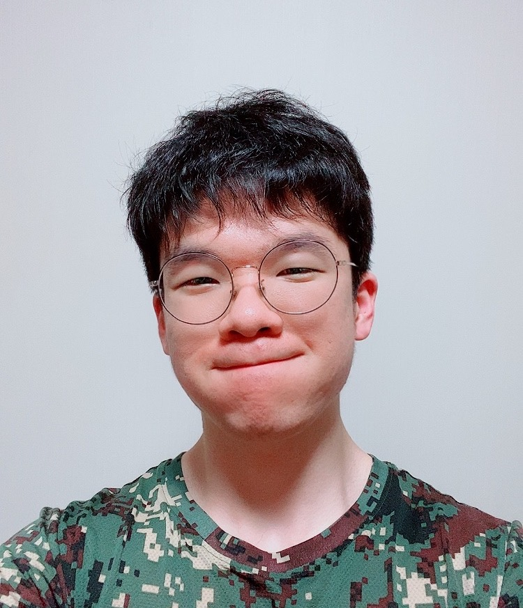

  
{{ define "styles" }}
{{ $.Scratch.Set "style_opts" (dict "src" "scss/pages/about.scss" "dest" "css/about.css") }}
{{ end }}

{{ define "main" }}

<div class="splash-container">
    <div class="splash">

        

        <h1>{{ .Params.heading }}<span class="fancy">.</span></h1>
        {{ if isset .Params "handle" }}
        <span class="handle">@{{ .Params.handle }}</span>
        {{ end }}
        <h2>
        {{ .Params.subheading }}
        </h2>
        
        <!-- 여기 아래에다가 포트폴리오 작성하면 됨 -->
        
        <div class="portfolio">
            현재 명지대학교 융합소프트웨어학부(데이터테크놀로지과)에서 학사과정을 이수하고 있습니다.<br>
            <br>
            대규모 DB관리에 관심이 있으며, 웹 백엔드 개발에도 흥미가 있습니다.(프론트엔드 개발도 가능합니다.)
            주로 Django + Bootstrap 조합으로 개발했으며, 최근에는 node.js + React 조합도 배워보고 있습니다.<br>
            <br>
            기술 외적으로는 "Put yourself in one's shoes!", "역지사지(易地思之)"의 마음가짐으로 사람을 이해하는데 관심이 많습니다.
            여러 사람의 마음을 충분히 헤아리면서 주어진 환경을 가꾸어 나갈 때 일어나는 선순환의 흐름이 세상을 바꿀 수 있다고 믿습니다.<br>
            <br>
            제가 어떤 사람인지 더 궁금하다면 아래의 이력서를 확인해주시기 바랍니다. 감사합니다. ☺️ <br>

            <ul>
                <li><a href="">CV</a>(국문)</li>
                <li><a href="">Resume</a>(국문)</li>
            </ul>
        </div>


        {{ partial "social-icons.html" .}}
    </div>
</div>

{{ end }}